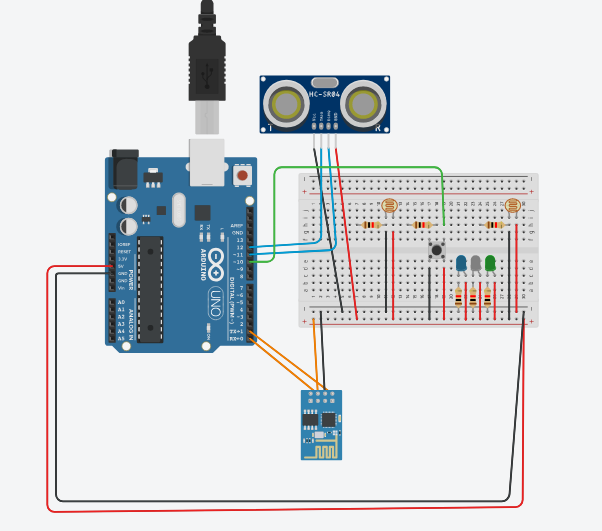

O Projeto
Projeto desenvolvido para a disciplina Sistemas distribuídos.
O Veículo Segue Luz é um tricíclo semiautônomo que pode ser controlado por servidor.
A conexão se faz através de um Middleware que irá se conectar ao módulo Bluetooth
que está no triciclo.
O Veículo também pode ser controlado por feixes de luz.
Utilização
Protótipo da aplicação
Ferramentas:
- Python
- Flask
- Web
- Arduíno
Execução:
Controle via Bluetooth
- Conectar as baterias
- Iniciar o servidor Flask
- Realizar a conexão via Bluetooth
Controle via Feixe de Luz
- Conectar as baterias
- Ativar o botão para controle
Obs: Essa função tem melhor desempenho em ambiente com pouca luminosidade